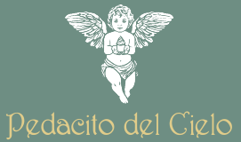

No rellenar

Siete preguntas rápidas para preparar el rodaje. Así llegamos con todo pensado y os molestamos lo mínimo.
Iríamos los dos, a la hora más tranquila del local, para sacar distintos tipos de contenido.
Serán los protagonistas de los primeros vídeos.
Cada pregunta que se repite es una idea de vídeo.
Por qué lleva el nombre de ese santo, de dónde sale la receta, un ingrediente especial…
Las tartas, los gofres, las fresas… Son los momentos más bonitos para grabar.
Encargos de tartas, horarios especiales, alguna novedad en la carta…
Para planificar los próximos contenidos, nos gustaría alinear expectativas contigo. Entender qué resultados marcan hoy la diferencia en tu negocio nos ayuda a afinar la estrategia y a medir lo que de verdad importa.
Ya lo tenemos. Con esto preparamos el rodaje y os contamos el plan antes de ir. Cualquier cosa, escríbenos por WhatsApp al 614 525 458.